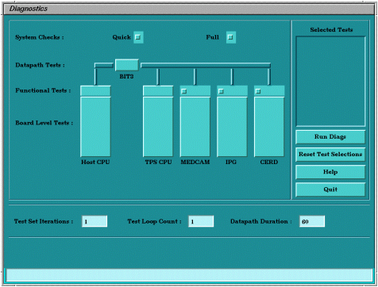
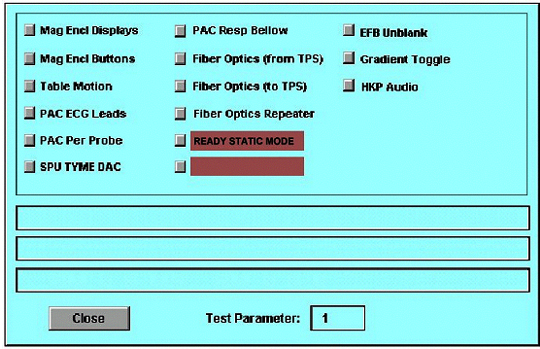
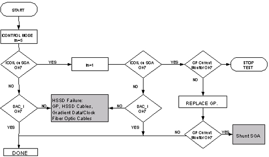

Operating Documentation
Direction 5133330-3, Rev# 14
Signa EXCITE HD 3.0T Service Methods
Module Version 1.0, Version Date 5/3/07
Operating Documentation |
With the complexity of the gradient driver subsystem and its closed loop analog circuit, it is useful to be able to measure and view key test points and signals in order to help isolate a problem to a FRU, or a logical group of FRUs. Because of this, the Manual Gradient Driver Test was created to provide a visual means of viewing these key signals and test points.
Prior to beginning the manual static test, all fault registers in the GradientSystem are checked. The list of all of the fault registers (listed below) that are polled before manual static tests are started. In addition, a comparison is made between the hardware configuration specified in the MRconfig.cfg file and the hardware sensed by the GP board. If a mismatch is found, an error is logged and no manual static tests are performed.
The following GradientFaults are checked:
Table 1: Gradient Faults
| Framing Error | Clock Stop Error |
| Overrange Error | Rollover Error |
| Current Distortion Error | SGA Cable Off |
| SGA Wiring/Internal Power Supply Undervoltage Fault | SGA Over Temperature |
| SGA Over Current | SGA Over Voltage |
| SGA Under Voltage | SGA-PS Cable Off |
| SGA-PS Power Off | SGA-PS Wiring/Internal Power Supply Under Voltage Fault |
| SGA-PS Over Temperature | SGA-PS Over Current |
| SGA-PS Over Voltage | SGA-PS Under Voltage |
If any of the above faults are set, an error is logged, no test signal is generated, and the axis remains in standby mode. To view the errors, turn the test off; the errors are then written to the error log.
The manual static test runs five test signals in one operational modes. From the operator work space there is one test selection available: [Ready Static Mode].
Clicking on [Ready Static Mode] plays out a constant voltage signal throughout the gradient driver subsystem. This test sets the Gradientto local mode, and puts out a constant value to the SGA modules. This output is based on the signal number entered in the data entry field at the operator workspace, and on the hardware configuration. Table 2 shows the expected output voltage at the ICOIL BNC connector.
Table 2: Ready Static Mode Hardware Config, Signal #, And Resulting DAC Value
| Hardware Configuration | Signa lLM=1 | Signal LM=2 | Signal LM=3 | Signal LM=4 | Signal LM=5 |
| ACGD- HiSlew | ICOIL (BNC) -0.625V | -0.3125V | 0V | 0.3125V | 0.625V |
This test causes the system to play out a constant voltage with the gradient drivers set to Ready Mode. There are five possible voltage levels that can be select by entering the numbers 1 through 5 in the test parameter field (syntax: lm=1). You can then measure voltages at select test points to localize hardware problems.
If this is the first manual diagnostic test requested, the IPG diagnostic code is downloaded. Then, the MDS link is reset, the SPI diagnostic code is downloaded if necessary, and the test request with the signal number is sent to the SPI via the dual port ram. The SPI then sends a packet to the GP requesting the voltage control mode test with the selected signal number.
To stop the test, click on [Ready Static Mode] again. This sends another packet via the SPI to the GP and stops the test. Once the test has been stopped, the error queue on the GP is flushed, and error messages are displayed in the error log.
| ||||
| POSSIBLE EQUIPMENT DAMAGE OR PERSONAL INJURY! | ||||
| THIS TEST GENERATES CURRENTS AND VOLTAGES. | ||||
| TAKE MEASUREMENTS FOR THE DESIGNATED SIGNALS AND SIGNAL LOCATIONS ONLY. DO NOT TOUCH THE OUTPUTS OF THE GRADIENT DRIVER AT ANY TIME DURING THIS TEST. DO NOT TOUCH THE INPUTS TO THE EPOXY-FILLED GRADIENT COIL AT ANY TIME DURING THIS TEST. |
Select the Diags Main Menu from the [Diagnostics] menu on the Service Desktop, then click [Start].
Wait for the Diagnostics Main Menu to appear, as shown in Illustration 1.
Click on [IPG], then [Manual...].
Select the Manual Gradient Driver Tests: [Ready Static MODE]. See Illustration 2.
Set Test Parameter value between 1 and 5 (e.g., 1 <Enter>). Click on [Close], then [Close] again.
| NOTE: | Levels of amplitude - These diagnostics were designed to invoke a signal at five different levels. Starting at the highest power helps isolate only those signals that are out of tolerance. If the main input and output are correct, it is not necessary to proceed further; however, if a signal is out of tolerance, further testing will localize to the FRU |
Click on [Run Diags]. A Results window appears, along with a status message indicating that the TPS is resetting. Once the TPS reset is complete, the selected diagnostic test automatically commences. To halt the test, click on [Stop Diags].
| NOTE: | If the signal disappears - This diagnostic is designed to play out a signal for fifteen minutes at a time. If the signals suddenly go away during a measurement, see if the hardware has gone from Ready to Standby. This is an indication that the Manual Gradient Driver Tests have timed out. Execute the level command to restart the diagnostic |
| NOTE: | Measuring test points - It is important to measure all test points with respect to analog ground unless stated otherwise. |
Illustration 1: Diagnostic Main Menu

Illustration 2: Manual Test Menu

Follow the flowcharts in Illustration 2-3 for Signa 8x systems.
Illustration 3: Gradient Manual Gradient Driver Tests Flowchart

Click on [Quit] to exit the Diags Main Menu, this will reset the TPS.